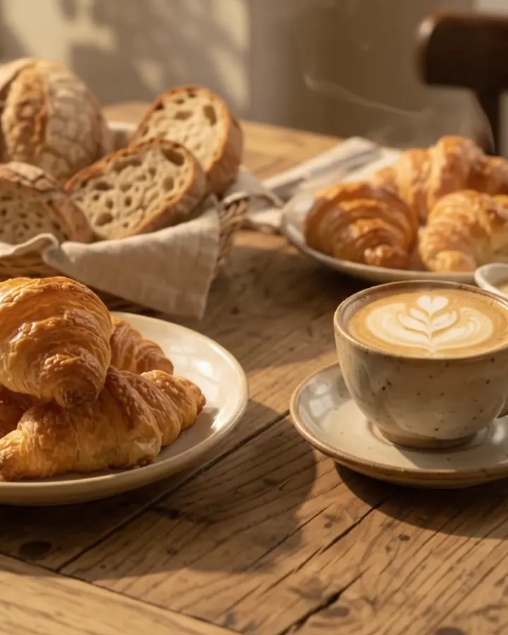
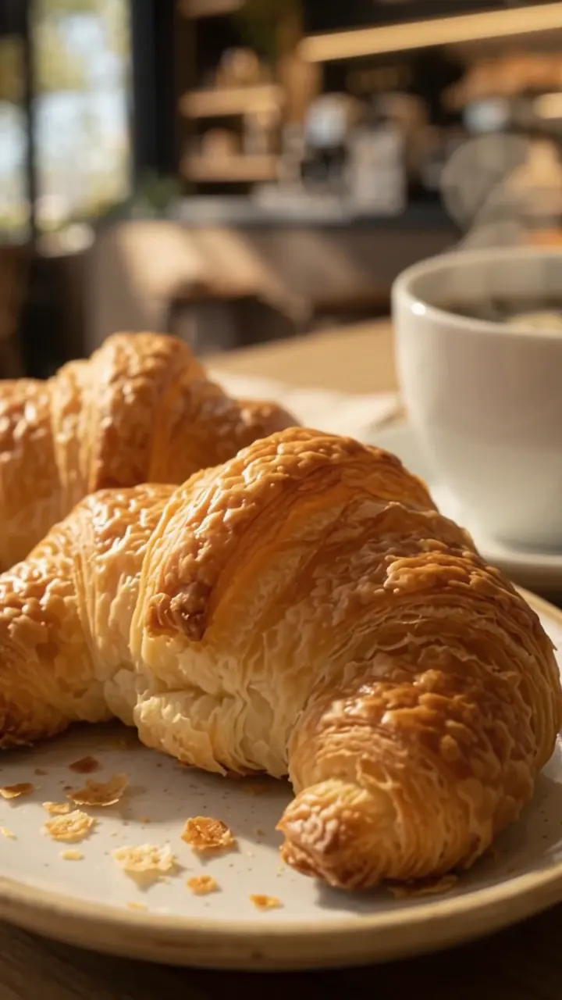
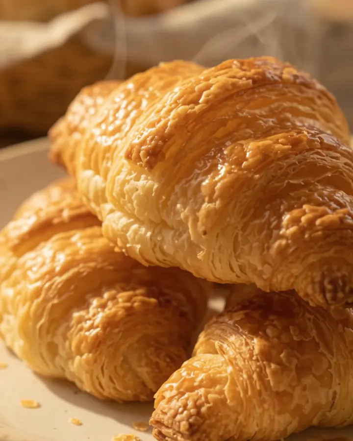
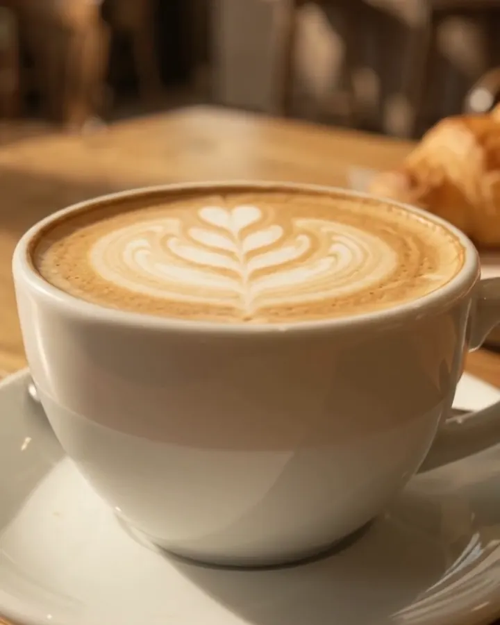
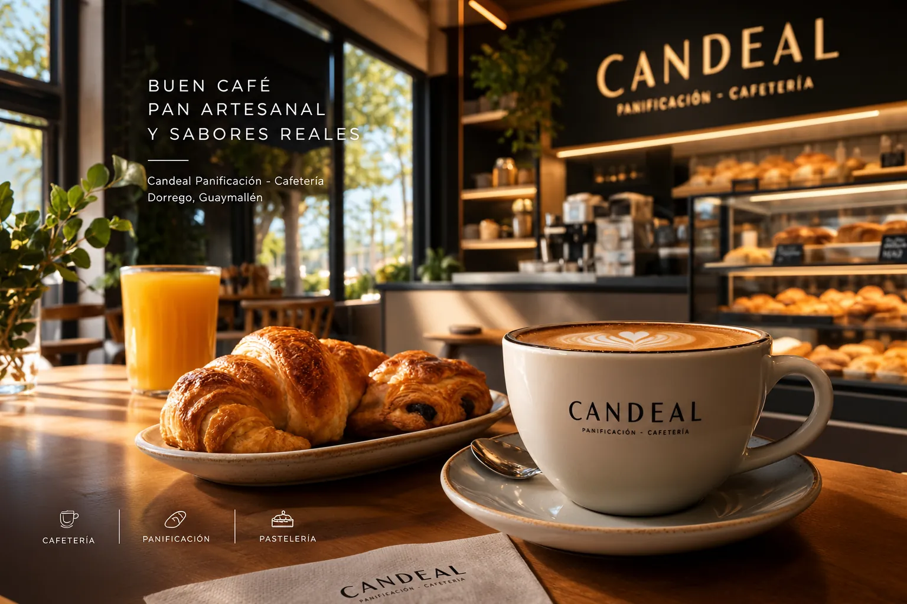

Panadería
Masa madre, fermentación lenta, corteza crocante y miga alveolada. El pan de siempre, hecho como se debe.

Panificación y cafetería en Dorrego, Guaymallén
Pan de verdad, pastelería de manteca y café para quedarse. Te esperamos en Lamadrid 1528.
Lun–sáb 8:30–13:30 y 16:30–21 h · Dom 8:30–13:30
En Candeal no apuramos el horno. Cada madrugada, mientras Dorrego todavía duerme, amasamos con harina, agua, sal y la paciencia que pide un pan que se come con las manos.
El sándwich de miga llega generoso. Los sacramentos de membrillo crujen y ceden. Las facturas salen de una masa que fermentó toda la noche. Y el café se sirve para quedarse, no para irse.
Lo que más se nombra en las reseñas de Google

Masa madre, fermentación lenta, corteza crocante y miga alveolada. El pan de siempre, hecho como se debe.

Sacramentos, facturas de crema y dulce de leche. Hojaldre laminado a mano, fresco cada mañana.

Café de cafetería, tostadas con manteca y el ritual del desayuno. Un lugar para entrar y quedarse.

Pan, facturas y pastelería de manteca, sándwiches de miga, sacramentos de membrillo y café. La oferta del día puede variar: escribinos por WhatsApp y te contamos qué hay.
Estamos en Lamadrid 1528, Dorrego, Guaymallén, Mendoza. Abrimos de lunes a sábado, de 8:00 a 21:00. Los domingos estamos cerrados.
Consultanos por WhatsApp y te contamos qué opciones hay disponibles.
Escribinos por WhatsApp contándonos qué necesitás y para qué fecha. Te confirmamos si lo podemos preparar.
Te respondemos por WhatsApp en horario de atención. Si preferís venir, la puerta está abierta de lunes a sábado.
Lunes a sábado, de 8 a 21 h
Escribinos por WhatsApp